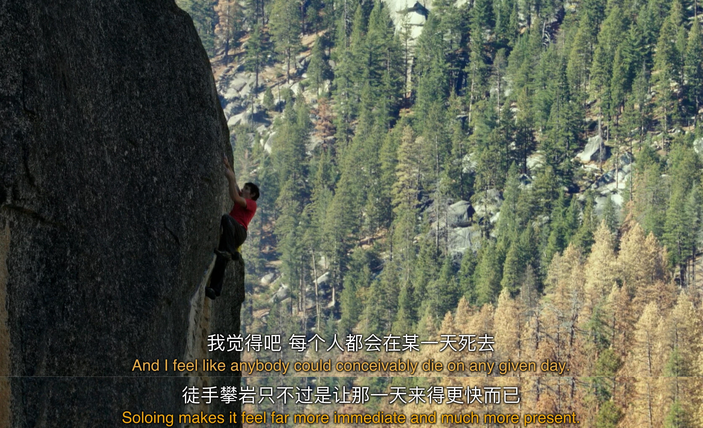
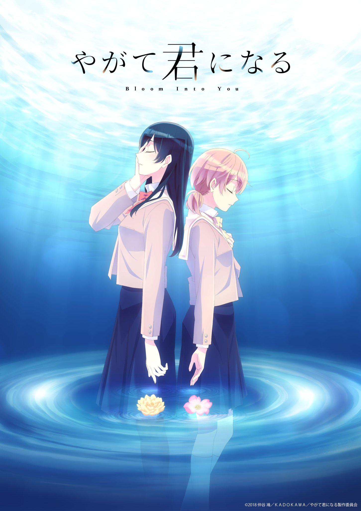
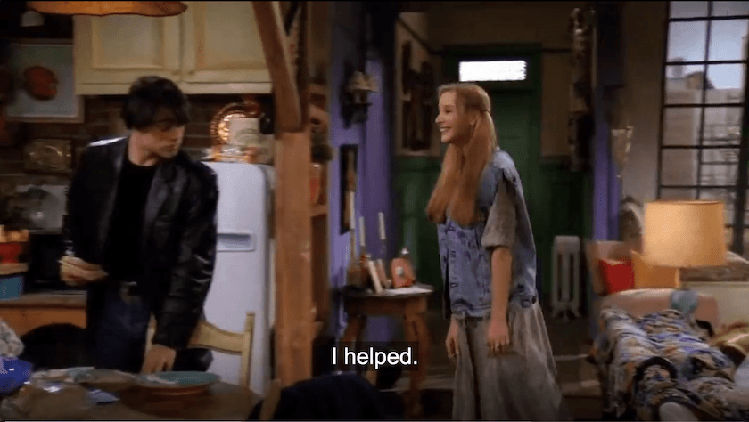

这半年里我对于「死亡」这个略沉重的话题有了新的思考，主要因为:
一期播客: #41：死亡是凉爽的夜晚
这是《得意忘形》播客的第 41 期节目。这期节目我又和之前来过节目的中二怪老师重聚。在一起看完了《CoCo》这个电影，以及二怪老师正好从墨西哥亡灵节归来之后，我们坐下来聊了聊「死亡」这件事。我们从墨西哥人民如何笑着面对死亡开始，聊到了不同文化对死亡的面对方式、文学里各种关于死亡的意象、以及人在有限生命下如何达到不朽。
- 博尔赫斯：「我们避而不谈的东西都像极了我们自己。」
- 从宗教意义上人是不死的，就像我们都是由沙子组成，和这个世界不断在发生交换，很微小的事情，就让我们交换了一些沙子，比如老师影响学生，这个学生又带着这个影响去影响了别人，从这个角度来说，我们获得永生。
- 主播曾在大学讲座时认识一个大四学生，通过邮件，讨论类似毕业后选择的问题。后来这个学生去美国，在一次爆炸事件中去世。
- 这期结束最后结束在海涅的一句诗中，也是本期的题目：死亡是凉爽的夜晚。
- 本期音乐也特别喜欢，都能在网易云上找到，尤其喜欢这首纯音乐： ▶ Watching The Boats With My Dad。
两部纪录片:
- 
《The Internet’s Own Boy: The Story of Aaron Swartz》(《互联网之子》)
Aaron Swartz 是一个超前地预见了知识共享的美好图景，为 social justice 赴汤蹈火，奇迹般地领导众人推翻 SOPA 法案，以死抗争这个亏欠他太多的世界的普罗米修斯式的人物。
“You literally ought to be asking yourself all the time what is the most important thing in the world I could be working on right now, and if you are not working on that why aren’t you?”
相信你应该真的每时每刻都问自己，现在这世界有什么最重要的事是我能参与去做的？如果你没在做那最重要的事，那又是为什么？
活着需不需要理由或意义，如果需要那么它是什么，大多数人没有想过也不会去想，只要生存下去然后享受眼下的快乐就已经满足了。
从小到大我一直是个敏感、叛逆、追求特立独行的人，超过 90% 的闲暇时间我都活在自己的精神世界里，对我来说精神生活的重要性大于物质生活，生活 ≠ 生存。如果为高考后的这几年定一个主题那就是「自我探索」，我将来要去哪里要做什么，为什么活着？
我最近一直在想，是什么让我们自觉独特。
是几首音乐吗，协奏曲、蓝调、后摇、脉冲？
是一些诗文吗，意象、隐喻、通感、呼应？
是一些到过的地方吗，林子、湖畔、无人的公路、异国的闹市？
还是我们目睹的事实，生老病死、荒谬、无常、因果？一些感想？一些照片？一些座右铭？一些感悟？我们怎么分配我们的时间，我们怎么选择我们的栖身，我们怎么舍弃我们的过去？
我们怎么思考我们的思考，怎么处理我们的关系，怎么实现我们的未来？在浴室的喷头下，忽然一个问题来到心上，我做的都对不对？
侧躺在枕头上，一些昨日明日自顾自上演，我是否不该再奢望？
在迎面而来的人流中穿梭，各自有自己的疲惫和奔赴，我的位置究竟如何？这是精神生活吗，审美、表达、思辨、交流？
我无法预料自己的精神生活，我的思维日复一日漫游，时而突变，料不到的念头，偶遇的成长，一些等待已久的顿悟。
「我的精神生活是仍对一切好奇，想再知道一些。」
高中时我和同学讨论过人生的意义，我说人生没有意义，因为从地球和宇宙的角度来看，个人太渺小了，思考这个问题本身就没有意义。既然没有意义，那么为什么不自杀？
不舍得死亡的理由便是活着的理由。
人的一生，要死去三次。
第一次，当你的心跳停止，呼吸消逝，你在生物学上被宣告了死亡；
第二次，当你下葬，人们穿着黑衣出席你的葬礼，他们宣告，你在这个社会上不复存在，你悄然离去；
第三次死亡，是这个世界上最后一个记得你的人，把你忘记，于是，你就真正的死去，整个宇宙都不再和你有关。
我并不害怕死亡，在任何时间任何地点人都有可能死去，只是概率问题罢了。我害怕死后被忘记，仿佛从来没有来过这个世界。我害怕美好的记忆随着时间而消逝，没有人记得。
潜意识中的这些恐惧让我有了创作的渴望。我最终把博客托管在 Github 上也是因为只要互联网存在，我的文字就不会消失。
我清楚地记得高中的一堂语文课上，老师谈起了“如何才能永生”，那便是创造价值来被人们永远记在心中，成为每个人的思想的一部分。
活着的三个理由
阮一峰曾在博客里写过 《活着的三个理由》: 罗素说，人活着有三个理由。
爱情
第一个理由是"追求爱情”（longing for love）。
因为爱情会带来"狂喜”（ecstasy），这是其他任何经历都做不到的；爱情能减轻孤独，让你对生活不再那么恐惧；爱情能创造最美好的人类生活，仿佛天堂的缩影。
爱情是我追求最久的东西，不是因为寂寞空虚，而是我对爱情一直充满着好奇和向往。
我最初的美好幻想来自小学时的一个女孩，我们曾是同桌，我喜欢她的开朗、独立、大姐姐般的成熟，她喜欢我的稳重和忧郁的气质。
在短短的不到一年的时间里我们彼此写过长长的情书，用功能机发过几百条短信，我第一次不负责任地说出了「我爱你」这三个字。
我曾经常给女孩写文字。诉说精神生活这类事情，对象的条件是十分苛刻的，对方必须是一个足够了解你的人，能够知道你所处的现实情况。而且对方的精神层次需要与你在一个不相上下的水平，这样对话才能够有推进下去的可能性。当时我周围几乎找不到有条件合适的同龄男生，所以我更愿意和关系不错的女孩倾诉。
我喜欢百合作品，确切来说是充满文艺气息的女性向百合作品。人物更贴近现实与复杂，感情的摇摆、苦恼与纠结，“有话不明说、想要的不去要” 的克制表达方式与百合作品的暧昧气氛更是相得益彰。（图片来自动画《终将成为你》

我的爱情观大体上是典型的 INFJ 性格爱情观:
- 对 soulmate 灵魂伴侣的追寻永远不停止，渴望找寻同类、真爱。但发现对方与想象不吻合，激情很快退却，再次找寻。
- 喜欢抽象型，因为相处的节奏更舒服。热衷探寻事物的本质，对谈话深度有需求。
- 讨厌聒噪。希望另一半经常保持向内心探索、叩问的习惯，拥有一颗澄澈的心。
- 不喜欢通过一些技巧性的手段去吸引异性，不会为了讨好异性而做一些很刻意的工作。希望另一半能够接受这样一个质朴、赤裸裸、不加修饰的自己，人无完人，另一半如果不能接纳我的不足而只贪恋闪光点，会让我觉得自己是被割裂的 “物” 而非完整的人，甚至产生被侮辱的感觉。
- 物质、性、性别都可以排在真爱之后。当选定一人，即使再多困难，都相信自己可以坚持下去。但是说服自己选定那个人是一个比较长的过程。
- 对精神需求高，吃喝玩乐的诱惑不大，很多东西没有执念。在恋情中，显得很没有生活实感，轻飘飘的。会担心自己无法给予对方特别强烈的生活体验感。
- 脱离了灵魂的肉体只是躯壳
- ……
另外我会喜欢上喜欢我的女孩，因为吸引她的一定不是我的外表。（笑
知识
第二个理由是"追求知识”（search for knowledge）。
因为知识能让我们理解人的内心，理解自然界，满足我们与生俱来的好奇心。
The hacker ethics:
- Access to computers-and anything that might teach you something about the way the world works-should be unlimited and total.
- All information should be free.
- Hackers should be judged by their hacking, not bogus criteria such as degrees, age, race, or position.
- You can create art and beauty on a computer.
- Computers can change your life for the better.
我一直相信，计算机可以让生活更美好。
同情心
第三个理由是"同情心”（pity for the suffering）。
当你看到他人受苦、看到饥饿的孩子、看到被压迫的人民、看到被虐待的老人，看到人类的孤独、贫穷、痛苦，你的内心都会难以平静。我们活着，就是为了减轻一些这种苦难，不仅为了帮助他人，还因为我们自己也是这种苦难的受害者。
高考第一志愿专业我报的是信息安全，为了成为一名“黑客”，用技术改变这个世界的不公。很中二很理想主义，但我愿意一直这样走下去。
今年二月我在知乎上收到一封私信，是一位在读大一的女孩，她读到了两年前我在「大一你们是怎么度过的？」问题下写的那篇 《在合工大的一年：转折点》，向我询问当时是如何说服父母的。之前我很少在发文字在公开的网络平台上，一些随笔也止步与朋友圈，但我没想到抱着无所谓的心态发在知乎的回答也能影响到他人。这件事让我更加坚信个人的力量可以为改变世界做出贡献，哪怕帮到的只是素不相识的一两个人，我也能从内心感到快乐。

然而六月初开始的香港事件又让我陷入绝望，未来还会好吗？
相关阅读
- 没想到我这辈子还能有丧家之犬的感觉 - Matters (访问需翻墙)